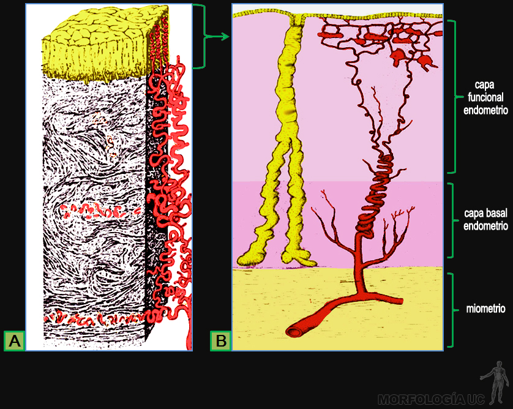

Aparato Reproductor
-
Fig. 9-1: Esquema del aparato reproductor masculino.
- 2= uréter;
- 3= ducto deferente;
- 5= cuerpo cavernoso;
- 7= glande del pene;
- 8= frenillo del prepucio;
- 11= epidídimo;
- 12= porción membranosa de la uretra;
- 13= glándula bulbouretral;
- 16= conducto eyaculador;
- 17= próstata;
- 19= vesícula seminal;
- 20= cuerpo esponjoso;
- 21= testículo;
- 22= base de la vejiga;
- 23= cara superior de la vejiga;
- 25= bulbo del cuerpo esponjoso del pene.
-
Fig. 9-2: Esquema de los órganos pélvicos femeninos.
- 1= tuba uterina;
- 2= ovario;
- 3= cuerpo del útero;
- 4= fondo del útero;
- 5= fondo de saco vésicouterino;
- 6= fondo de saco rectouterino;
- 7= peritoneo parietal;
- 8= vejiga;
- 9= sínfisis púbica;
- 10= cuello uterino;
- 11= diafragma urogenital;
- 12= pared vaginal;
- 13= clítoris;
- 14= uretra;
- 15= labio mayor;
- 16= labio menor;
- 17= canal anal;
- 31= esfínter anal externo;
- 32= vestíbulo vaginal.
-

Fig. 9-3A: Esquema de los órganos genitales internos femeninos.
- 2= ovario;
- 3= cuerpo del útero;
- 4= fondo del útero;
- 10= cuello uterino;
- 12= pared vaginal;
- 18= fimbrias;
- 19= arteria ovárica;
- 20= porción ampular de la tuba uterina;
- 21= porción ístmica de la tuba uterina;
- 22= uréter;
- 23= miometrio;
- 24= arteria uterina;
- 25= perimetrio;
- 26= peritoneo pélvico;
- 27= endometrio;
- 28= cuello uterino;
- 29= ligamento útero ovárico;
- 30= ostium abdominal;
- 33= fornix vaginal;
- 34= porción intravaginal del cuello uterino.
-

Fig. 9-3B: Esquema de examen clínico del útero y anexos uterinos. Mediante palpación bimanual, un dedo en la vagina y la otra mano deprimiendo la pared abdominal, es posible reconocer cambios de consistencia del útero. En la mujer virgen este examen se puede realizar mediante un tacto rectal.
- 1= útero;
- 2= recto;
- 3= sínfisis púbica;
- 4= vejiga;
- 5= uretra.
-
Fig. 9-4A: Corte sagital de pelvis femenina.
Flecha roja= marca el fondo de saco rectouterino.Flecha azul= marca el fondo de saco útero vesical.- 1= peritoneo parietal pélvico;
- 2= vejiga;
- 3= vagina;
- 4= cuello uterino;
- 5= fondo uterino;
- 6= ovario;
- 7= porción ampular de la tuba uterina;
- 8= ligamento suspensorio del ovario;
- 9= ligamento útero ovárico;
- 10= fimbrias;
- 11= cavidad uterina;
- 12= colon pélvico.
-
Fig. 9-4B: Esquema de un examen del cuello uterino mediante una colposcopía, el separador permite ver el cuello uterino.
- 1= útero;
- 2= fondo de saco rectouterino;
- 3= recto;
- 4= os externo, abertura vaginal del conducto cervical;
- 5= porción intravaginal del cuello uterino;
- 6= fornix vaginal anterior;
- 7= fornix vaginal posterior, zona que está en íntima aproximación con el fondo de saco rectouterino (2).
-
Fig. 9-5: Corte sagital de pelvis femenina.
Flecha azul= marca la pared vesical superior.Flecha verde= muestra la pared ínfero lateral de la vejiga.- 1= labio mayor;
- 2= labio menor;
- 3= vestíbulo vaginal;
- 4= vagina;
- 5= vejiga;
- 6= pubis;
- 7= cuello uterino;
- 8= cavidad uterina;
- 9= fondo uterino;
- 10= recto;
- 11= canal anal;
- 12= clítoris;
- 13= uretra.
-
Fig. 9-6:
- A) Esquema que muestra las estructuras que pueden encontrarse en un corte a través del ovario;
- B) MO de un corte perpendicular por el ovario teñido con HE, que muestra corteza (C) y parte de la médula (M).
-
Fig. 9-7: MO de cortes por corteza del ovario, teñidos con HE.
- A) se distingue: albugínea ovárica y folículos primordiales, primarios y secundario, en;
- B) folículo secundarios rodeado de las tecas y en;
- C) a mayor aumento destacan las células de la granulosa y de la teca interna.
-
Fig. 9-8: MO de cortes por ovario, teñidos con HE, que muestran:
- A) folículo de Graaf;
- B) parte de un cuerpo lúteo;
- C) cuerpo albicans.
-
Fig. 9-9:
Flecha verde= células ciliadas.Cabeza de flecha verde= células secretoras.- A) MO a bajo aumento de corte por la pared de una trompa uterina en la zona del istmo que de muestra sus capas muscular y mucosa, tinción HE;
- B) MO del epitelio que reviste la mucosa.
-

Fig. 9-10:
- A) Dibujo que muestra la estructura de la pared uterina y la disposición de su irrigación;
- B) Esquema de la estructura del endometrio en la fase secretora, destacando su irrigación y glándulas uterinas.
-
Fig. 9-11:
- A) Esquema que muestra los cambios en la estructura del endometrio durante el ciclo menstrual;
- B) MO de corte teñido con HE de endometrio en etapa proliferativa, inicial, y en;
- C) a mayor aumento destacan las glándula rectas en la capa funciona del endometrio;
- D) corte por endometrio en fase secretora, con las glándulas tortuosas en la capa funcional.
-
Fig. 9-12: MO de cortes por el cuello uterino, tinción HE.
- A) corte a lo largo del canal endocervical (EC) en que luego el epitelio monoestratificado, es reemplazado por un epitelio estratificado plano;
- B) glándulas ende cervicales;
- C) corte por el tipo de epitelio de revestimiento en la paso de ende a eso- cérvix.
-
Fig. 9-13: Esquema de la vía genital masculina.
- 1= peritoneo parietal;
- 2= uréter;
- 3= ducto deferente, ver el cruce con el uréter;
- 4= cuerpo cavernoso del pene;
- 5= cuerpo cavernoso;
- 6= porción esponjosa de la uretra;
- 7= prepucio;
- 8= glande;
- 9= fosa navicular;
- 10= testículo;
- 11= epidídimo;
- 13= glándula bulbouretral;
- 14= cana anal;
- 15= porción prostática de la uretra;
- 16= conducto eyaculador;
- 17= próstata;
- 18= diafragma urogenital;
- 19= vesícula seminal;
- 24= fondo de saco rectovesical (de Douglas);
- 25= bulbo del cuerpo esponjoso del pene;
- 26= esfínter anal externo.
-
Fig. 9-14A: Corte sagital de pelvis masculina.
- 1= cuerpo cavernoso del pene;
- 2= glande;
- 3= uretra esponjosa;
- 4= bulbo del cuerpo esponjoso del pene;
- 5= uretra prostática;
- 6= epidídimo;
- 7= escroto;
- 8= testículo;
- 9= recto;
- 10= canal anal.
-
Fig. 9-14B: Esquema del examen clínico de la próstata, mediante un tacto rectal se pueden apreciar cambios de consistencia de esta glándula.
- 1= vejiga;
- 2= sínfisis púbica;
- 3= vesícula seminal;
- 4= recto;
- 5= conducto eyaculador;
- 6= próstata;
- 7= uretra prostática.
-
Fig. 9-15:
- A) esquema de la estructura histológica del testículo;
- B) MO de corte través largo del testículo, teñido con HE.
-
Fig. 9-16: MO de cortes por testículo, teñidos con HE, que muestran:
- A) túnica albugínea y túbulos seminíferos;
- B) túbulos seminíferos rodeados de tejido intersticial;
- C) cordón de células de Leydig en tejido intersticial.
-
Fig. 9-17:
- A) MO de un corte por túbulo seminífero, teñido con HE, y dibujo que muestra las células presentes en la pared del tubo semiínfero. (en amarillo= células de Sertoli);
- B) esquema que muestra las 6 etapas del ciclo espermático en humanos (cada generación de las células de la serie espermática se muestra de un color distinto).
-
Fig. 9-18:
- A) MO de cortes por epidídimo tinción HE;
- B) MO de cortes por el conducto deferente: en reposo y durante la eyaculación;
- C) esquema que muestra la unión del conducto deferente al conducto eyaculador, y su conexión con la uretra a través de la próstata.
-
Fig. 9-19: Glándulas sexuales anexas.
- A) Dibujo de la estructura de la pared de la vesícula seminal y MO de un corte de igual orientación, a través de ella, tinción H-E;
- B) Dibujo que representa la organización de la próstata en un corte transversal. Destaca la ubicación de la uretra y de los conductos eyaculadores, en;
- C) MO de cortes en se compara el aspecto de los alvéolos glandulares en dos etapas de acumulación de la secreción prostática.
-
Fig. 9-20A: Esquema de la pelvis ósea donde se marcan los diámetros.
- 1= diámetro transverso del estrecho superior;
- 2= diámetro oblicuo del estrecho superior;
- 3= diámetro antero posterior del estrecho superior o conjugado anatómico;
- 4= diámetro promonto retropúbico o conjugado verdadero;
- 5= diámetro promonto subpúbico, conjugado diagonal o conjugado obstétrico;
- 6= diámetro antero posterior del estrecho inferior;
- 7= diámetro transverso del estrecho inferior;
- 8= eje del canal del parto;
- 9= sínfisis púbica;
- 10= hueso ilíaco;
- 11= sacro;
- 12= coxis;
- 13= promontorio del sacro;
- 14= tuberosidad isquiática;
- 15= acetábulo.
-
Fig. 9-20B: Vista superior de la pelvis ósea.
Línea roja= diámetro transverso del estrecho superior, medido entre las zonas más profundas de las líneas innominadas.Línea azul= diámetro antero posterior del estrecho superior o conjugado anatómico, medido entre el promontorio y el borde superior de la sínfisis púbica.Línea verde= diámetro oblicuo del estrecho superior, medido entre la articulación sacro-ilíaca y la eminencia ilio-púbica del lado opuesto. -
Fig. 9-20C: Corte sagital de la pelvis ósea.
- 1= diámetro antero posterior del estrecho superior o conjugado anatómico;
- 2= diámetro promonto retropúbico o conjugado verdadero;
- 3= diámetro promonto subpúbico, conjugado diagonal o conjugado obstétrico.
-
Fig. 9-21A: Vista inferior de la pelvis ósea.
Línea roja= diámetro transverso del estrecho inferior.Línea azul= diámetro antero posterior del estrecho inferior. -
Fig. 9-21B: Vista anterior de una pelvis ósea masculina.
Línea azul= marca el ángulo subpúbico estrecho característico. -
Fig. 9-22: Disección de la musculatura de la pared pélvica.
- 1= nervio obturador;
- 2= arteria obturatriz;
- 3= vena obturatriz;
- 4= arco tendinoso de la pelvis;
- 5= músculo coxígeo;
- 6= porción iliocoxígea del elevador del ano;
- 7= porción pubocoxígea del elevador del ano;
- 8= diafragma urogenital;
- 9= porción puborectal del elevador del ano;
- 10= cuerpo del pubis;
- 6+7+9= músculo elevador del ano;
- 5+6+7+9= diafragma pélvico.
-
Fig. 9-23: Esquemas de la musculatura perineal.
- 1= músculo isquio cavernoso;
- 2= músculo bulbo esponjoso;
- 3= membrana perineal;
- 4= músculo transverso superficial del periné;
- 5= tendón central del periné;
- 6= tuberosidad isquiática;
- 7= músculo obturador interno;
- 8= músculo elevador del ano;
- 9= esfínter anal externo;
- 10= rafe ano coxígeo;
- 11= coxis.